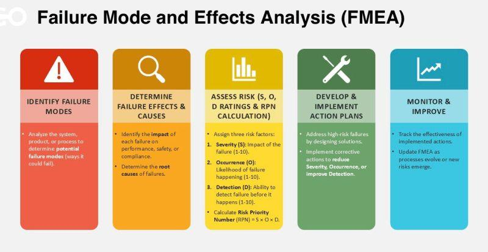
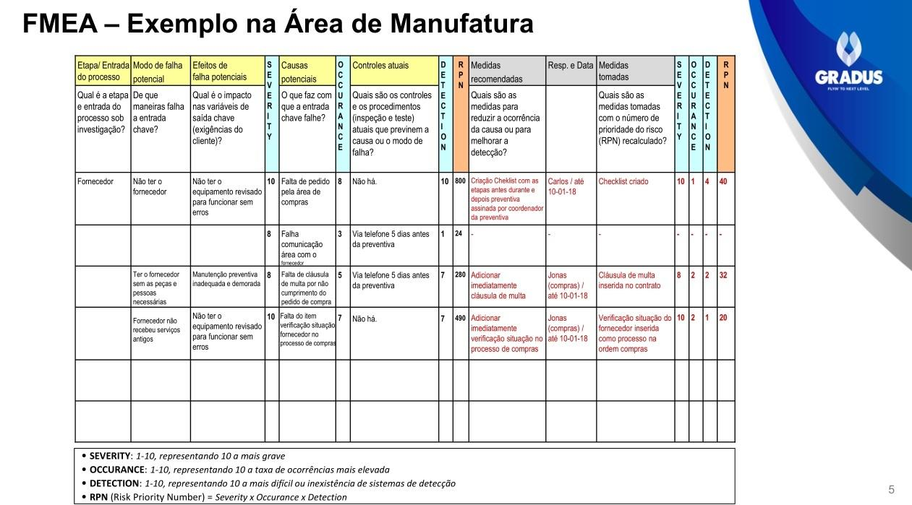
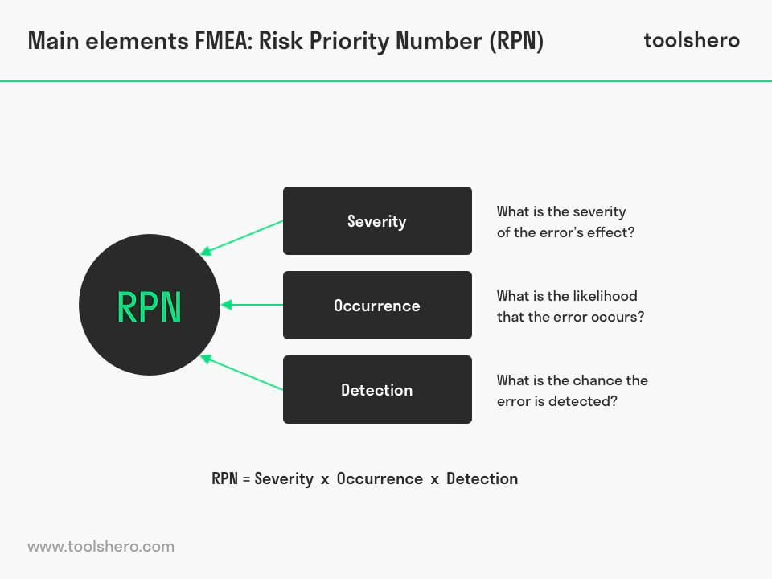
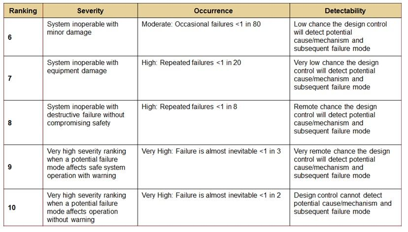
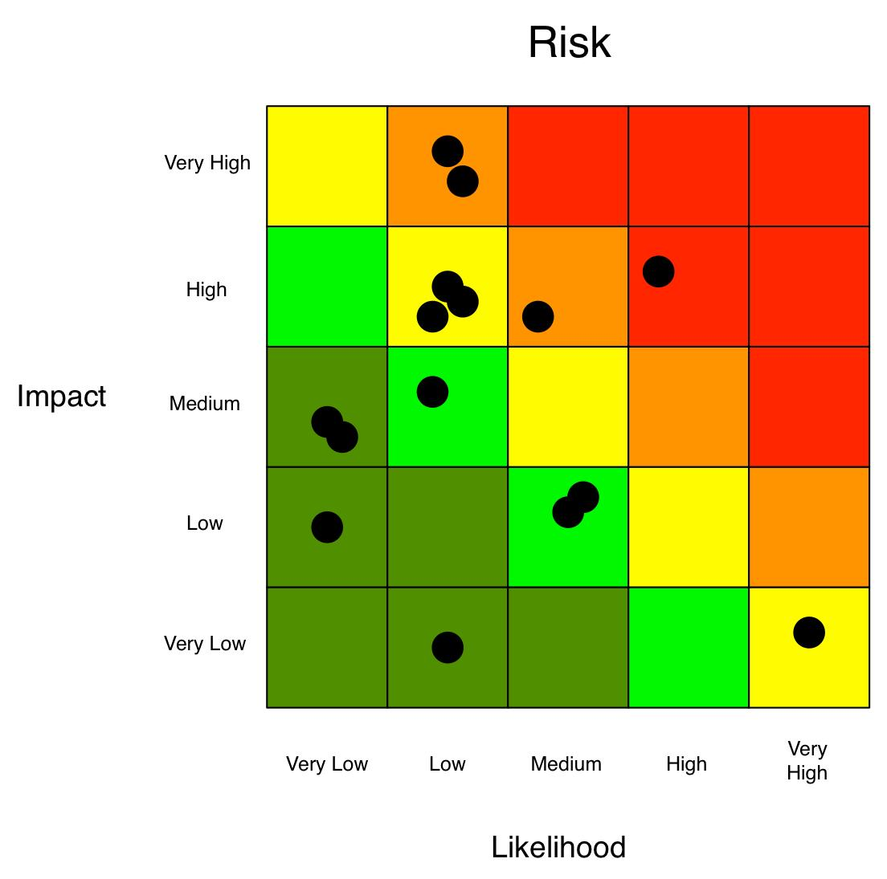

O que é FMEA?
A FMEA, sigla para Failure Mode and Effects Analysis, ou Análise de Modos de Falha e Efeitos, é uma ferramenta usada para identificar, avaliar e priorizar riscos em processos industriais, administrativos, logísticos e de serviço.
Existem diferentes tipos de FMEA. A DFMEA é aplicada ao projeto de produtos, enquanto a PFMEA, foco deste artigo, é aplicada à análise de processos.
Para que serve a PFMEA?
O objetivo principal da PFMEA é identificar riscos antes que eles ocorram. Com isso, a equipe consegue propor ações preventivas, reduzir falhas e melhorar a confiabilidade do processo.
A análise pode ser usada em processos produtivos, fluxos administrativos, serviços, logística, manutenção e outras rotinas nas quais uma falha pode gerar impacto para o cliente, para a operação ou para a segurança.
Estrutura da FMEA de processo
A FMEA segue uma lógica estruturada baseada em perguntas-chave aplicadas a cada etapa do processo:
- Qual é a etapa do processo?
- Qual é o requisito dessa etapa?
- O que pode dar errado?
- Qual é o efeito da falha?
- Qual é a gravidade do efeito?
- Qual é a causa da falha?
- Com que frequência ela pode ocorrer?
- Como essa falha pode ser detectada?

O número de prioridade de risco (RPN)
O coração da FMEA é o cálculo do RPN, ou Risk Priority Number. Ele permite quantificar o risco de cada falha e comparar prioridades entre diferentes etapas do processo.
O RPN é calculado pela multiplicação de três fatores: severidade, ocorrência e detecção.

Escala dos fatores
Cada fator normalmente varia de 1 a 10. Em severidade, o valor 1 representa efeito insignificante, enquanto 10 representa falha crítica ou risco à vida. Em ocorrência, 1 indica evento extremamente raro e 10 indica evento frequente. Em detecção, 1 representa uma falha fácil de detectar e 10 representa uma falha praticamente impossível de detectar antes do impacto.

Como interpretar o RPN
O RPN pode variar de 1 a 1000. Quanto maior o resultado, maior a prioridade de ação. Um RPN alto indica que a equipe deve atuar para reduzir a ocorrência, melhorar a detecção ou diminuir a severidade do efeito.
A FMEA não deve ser tratada apenas como uma conta matemática. Ela é um processo de raciocínio estruturado para entender falhas potenciais, suas causas, seus impactos e os controles necessários para reduzir riscos.

Exemplo prático: dirigir até o trabalho
Imagine o processo "dirigir até o trabalho". Um requisito simples pode ser não dirigir rápido demais e também não dirigir lento demais.
No primeiro modo de falha, dirigir em alta velocidade pode gerar um acidente. Se a severidade for 10, a ocorrência for 3 e a detecção for 2, o RPN será 60.
No segundo modo de falha, dirigir devagar demais pode causar atraso. Se a severidade for 7, a ocorrência for 5 e a detecção for 3, o RPN será 105. Nesse caso, a maior prioridade é reduzir o risco da segunda falha, pois ela apresenta maior RPN.
Ações de melhoria
Depois de identificar os riscos, a equipe deve propor ações para reduzir a ocorrência, melhorar a detecção ou reduzir a severidade. Isso pode incluir mudanças no processo, inspeções, sensores, alarmes, proteções, redundâncias, treinamento ou revisão de procedimentos.
O objetivo final é reduzir o risco e tornar o processo mais previsível, controlado e seguro.